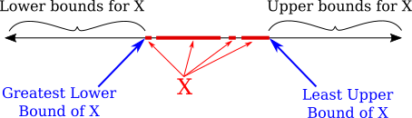
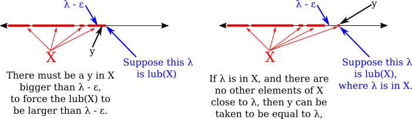

03 Least Upper Bound Property
Dedekind cuts are a way of constructing a specific set that represents the real numbers. But just having that set doesn't provide a full understanding of the real numbers, even after defining such basic operations as addition, multiplication, and less than. One property that really distinguishes the real numbers is called "completeness," the idea that there are no gaps in the real numbers. And one way to express completeness is the least upper bound property. The other important ideas in Section 1.2 are the Archimedean property of the real numbers and the fact that the rational numbers are dense in the real numbers.
A subset of $\R$ is "bounded" if it does not stretch off to infinity. This intuitive idea is made precise by the following definitions:
Definition: Let $X$ be a subset of $\R.$ An upper bound for $X$ is a number $b$ such that $x\le b$ for all $x\in X.$ If an upper bound exists for $X,$ then $X$ is said to be bounded above. Similarly, a lower bound for $X$ is a number $c$ such that $x\ge c$ for all $x\in X.$ If a lower bound exists for $X,$ then $X$ is said to be bounded below. If $X$ is bounded both above and below, then $X$ is said to be bounded.
A "least upper bound" for a set is then an upper bound that is as small as possible. That is, it is an upper bound that is smaller than every other upper bound. Greatest lower bounds are defined similarly.

Definition: Let $X$ be a subset of $\R$ that is bounded above. A least upper bound for $X$ is an upper bound $\lambda$ for $X$ such that for every upper bound $b$ of $X,$ $\lambda\le b.$ Similarly, a greatest lower bound for $X$ is a lower bound $\mu$ for $X$ such that for every lower bound $c$ of $X,$ $\mu\ge c.$
The least upper bound property can then be proved as a theorem about the set of real numbers, defined as the set of Dedekind cuts.
Theorem (Least Upper Bound Property): Every non-empty subset of $\R$ that is bounded above has a least upper bound.
The easy proof for Dedekind cuts shows that the least upper bound of a non-empty, bounded-above set $X$ of Dedekind cuts is obtained by taking the union of all the Dedekind cuts in $X.$ The proof is in the textbook.
Note that the Greatest Lower Bound Property follows from the Least Upper Bound Property. That is, every non-empty subset of $\R$ that is bounded below has a greatest lower bound. (Proof: If $X$ is a non-empty, bounded-below subset of $\R,$ let $X^-=\{-x\,|\,x\in X\}.$ Then $X^-$ is bounded above because for any lower bound $c$ of $X,$ the number $-c$ is an upper bound for $X^-.$ So, $X^-$ has a least upper bound, $\lambda.$ It follows easily that $-\lambda$ is a greatest lower bound for $X.$)
We will use the least upper bound property many times to prove various important facts about the real numbers. The first example is the Archimedean property, which says that the set of natural numbers, $\N,$ is not bounded above. That is, there is no real number that is larger than every natural number. (My definition is a little different from the book's.)
Theorem (Archimedean Property of $\R$): For any real number $x\in X,$ there is a natural number, $n$ such that $x<n.$
Proof: Suppose, for the sake of contradiction, that $x$ is a real number and $x>n$ for every $n\in\N.$ Then $x$ is an upper bound for $\N.$ Since $\N$ is a non-empty set that is bounded above, then by the least upper bound property, $\N$ has a least upper bound, $\lambda.$ But consider $\lambda-1.$ For $n\in \N,$ $n+1$ is also in $\N.$ Since $\lambda$ is an upper bound for $\N,$ $\lambda \ge n+1.$ It follows that $\lambda-1\ge n.$ Since this is true for all $n\in\N,$ $\lambda-1$ is an upper bound for $\N.$ But $\lambda-1<\lambda,$ and this contradicts the fact that $\lambda$ is the least upper bound for $\N.$ This contradiction proves that $\N$ cannot be bounded above, and that no such $x$ can exist. $\qed$
The book's statement of the Archimedean property is that for any two positive real numbers $\alpha$ and $\beta,$ there is a natural number $n$ such that $n\alpha>\beta.$ If we let $x=\frac{\beta}{\alpha},$ then my theorem gives a natural number $n$ such that $\frac{\beta}{\alpha}<n,$ which is equivalent to $n\alpha>\beta.$
The Archimedean property of $\R$ can be used to prove that the rational numbers are dense in the real numbers. That is for any two real numbers $a$ and $b,$ there is a rational number $r$ such that $a<r<b.$ The proof is in the textbook (but is not especially important). Another way of expressing the density of the rational numbers is that for any $x\in\R$ and $\eps>0,$ there is an $r\in\Q$ such that $0<|x-r|<\eps$; that is, there is a rational number, not equal to $x$ itself, within distance $\eps$ of $x.$
It is easy to see that the least upper bound of a set is unique. That is, a set can have only one least upper bound. Another way of saying this is that if $\lambda_1$ and $\lambda_2$ are least upper bounds for a set $X,$ then $\lambda_1$ and $\lambda_2$ must be the same. For, suppose that $X$ is a non-empty set that is bounded above, and suppose that $\lambda_1$ and $\lambda_2$ both satisfy the least upper bound property for $X.$ Since a least upper bound is, in particular, an upper bound, we have that $\lambda_2$ is an upper bound for $X$. Since $\lambda_2$ is an upper bound and $\lambda_1$ is a least upper bound, we have by the least upper bound property for $\lambda_1,$ that $\lambda_1\le\lambda_2.$ But, for the same reason, we also have $\lambda_2\le\lambda_1.$ Since $\lambda_1\le\lambda_2$ and $\lambda_2\le\lambda_1,$ it follows that $\lambda_1=\lambda_2.$
We finish with another characterization of least upper bounds. Note that the least upper bound of a set might or might not be an element of that set. For example, if $X=\{\frac1n\,|\,n\in\N\}=\{1,\frac12,\frac13,\frac14,\dots\},$ the least upper bound is $1,$ which is in the set. But if $X=\{1-\frac1n\,|\,n\in\N\}=\{0,\frac12,\frac23,\frac45,\frac56,\dots\},$ then the least upper bound is again 1, but is not in the set.
Theorem: Let $X$ be a non-empty subset of $\R$ that is bounded above, and let $\lambda$ be an upper bound for $X.$ Then $\lambda$ is the least upper bound for $X$ if and only if for every $\eps>0,$ there is a $y\in X$ such that $y> \lambda-\eps.$
Proof: Suppose that $\lambda$ is the least upper bound of $X.$ Let $\eps>0.$ Since $\lambda-\eps<\lambda,$ and $\lambda$ is the smallest upper bound of $X,$ it follows that $\lambda-\eps$ is not an upper bound for $X.$ This means that $X$ must contain some element $y\in X$ such that $\lambda-\eps$ is not greater than or equal to $y.$ That is, $y>\lambda-\eps.$
Conversely, suppose that $\lambda$ is an upper bound for $X$ and for every $\eps>0,$ there is a $y\in X$ such that $y\ge \lambda-\eps.$ We want to show that $\lambda$ is the least upper bound for $X.$ Suppose that $x$ is some upper bound of $X.$ We must show that $\lambda\le x.$ Suppose, for the sake of contradiction, that $\lambda>x.$ Let $\eps=\lambda-x.$ Then $\eps>0,$ and so there is a $y\in X$ such that $y>\lambda-\eps.$ Since $\lambda-\eps=x,$ this says that $y>x.$ But that contradicts the assumption that $x$ is an upper bound for $X.$ This contradiction shows that $\lambda$ must be the least upper bound. $\qed$
The proof might be confusing. Some pictures can make things clearer. It's useful to look separately at the cases where $\lambda\notin X$ and where $\lambda\in X$:

Think of yourself standing on the number line, facing towards the positive direction. bound of $X$ if there are no elements of $X$ in front of you. You are at the least upper bound if that is true, and also backing up even the tiniest distance, $\eps,$ would mean that there is now at least one element of $X$ in front of you. This can happen either because the point where you are standing is itself the least upper bound of $X,$ or because there are points of $X$ that are arbitrarily close to the point where you are standing.